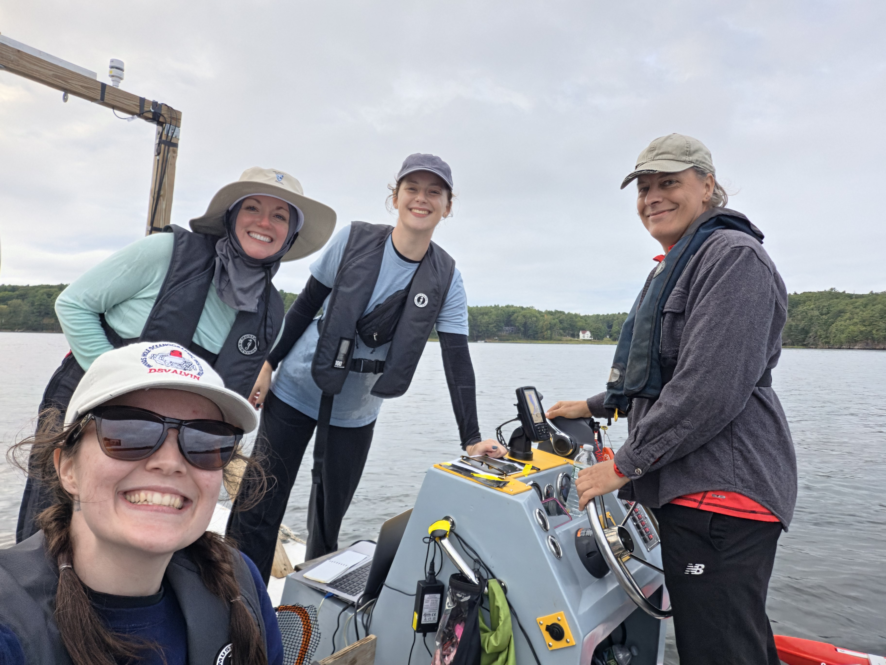
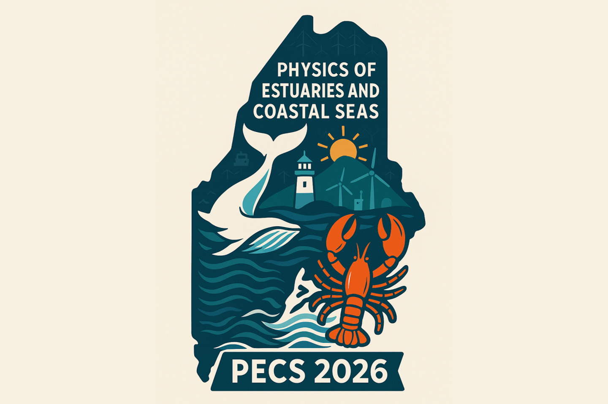
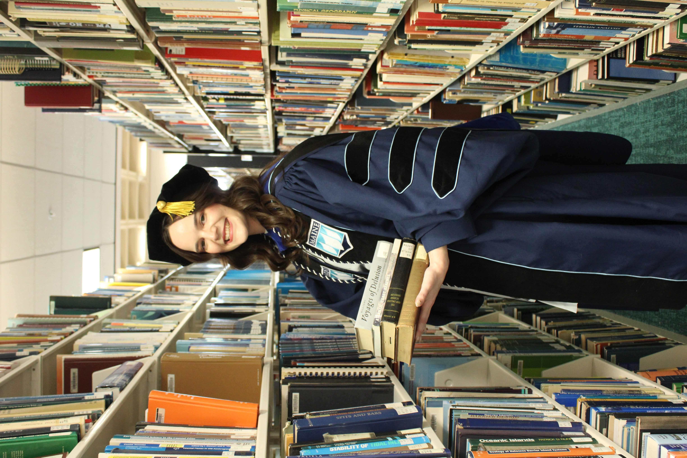
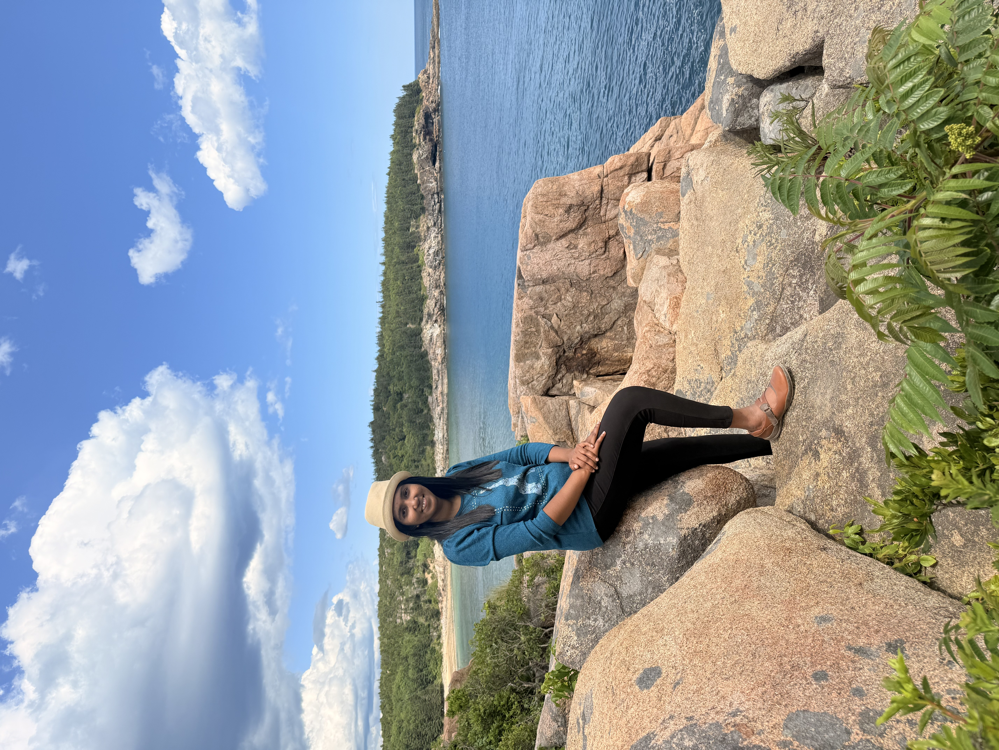
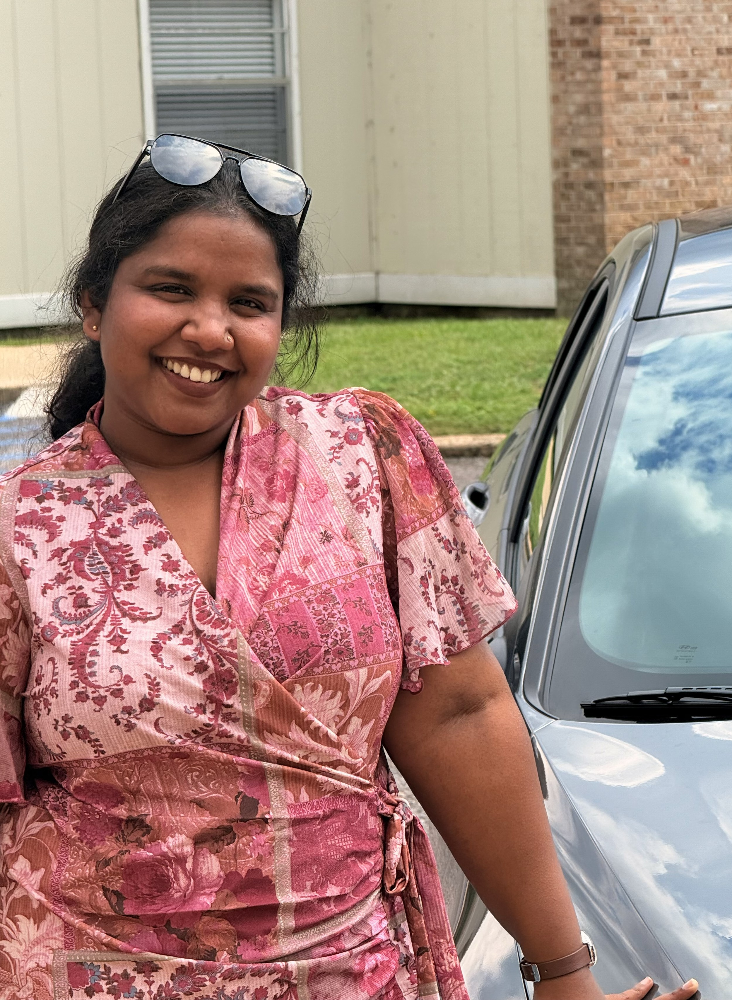
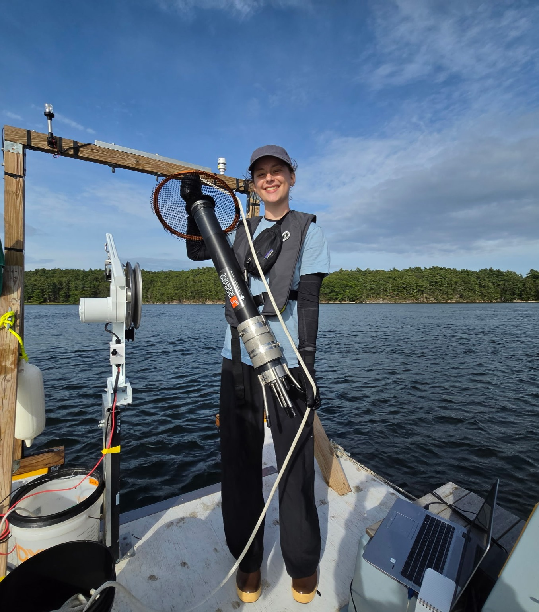

From the field
Kennebec River, Maine field work
· SWELL Lab
The field team aboard the boat. Explore our research activities and fieldwork photos.
Latest from SWELL · Research and profile highlights accompany our lab news. Campus, coastal, and fieldwork scenes illustrate story themes; event photographs are identified in their captions.

From the field
· SWELL Lab
The field team aboard the boat. Explore our research activities and fieldwork photos.

Conferences
–

Lab milestones
Research perspectives
Nalika Lakmali

Coastal dynamics
Malavika Sudhakaran

New student
From Washington State to Maine

Lab life
Explore opportunities

Field notes ·

Fieldwork on the Kennebec River, Maine.
A recap of the fieldwork will be added here.
Stories and milestones from the lab, alongside research highlights.
Conferences · –
Kimberly Huguenard helped facilitate PECS 2026, with SWELL Lab members helping run the conference in Portland, Maine.
The conference took place from Sunday, August 9, through Friday, August 14, 2026, at Hannaford Hall at the University of Southern Maine. PECS brings coastal engineers and oceanographers together to exchange research on estuaries and coastal seas, with opportunities for students and early-career researchers to connect with the wider community.
Topics included tides and waves, sediment transport, river–coast interactions, and estuaries under climate change.
Visit the official PECS 2026 conference page for the program and further details.
Lab milestones ·
Vanessa Mahan Quintana's defense took place on April 17, 2026.
More details and photographs from the day will be added here.
New student · SWELL Lab
Sasha Bugbee joins SWELL Lab as a new student from Washington State. Welcome to Maine, Sasha!
We are excited to welcome Sasha to the team and look forward to the research ahead.